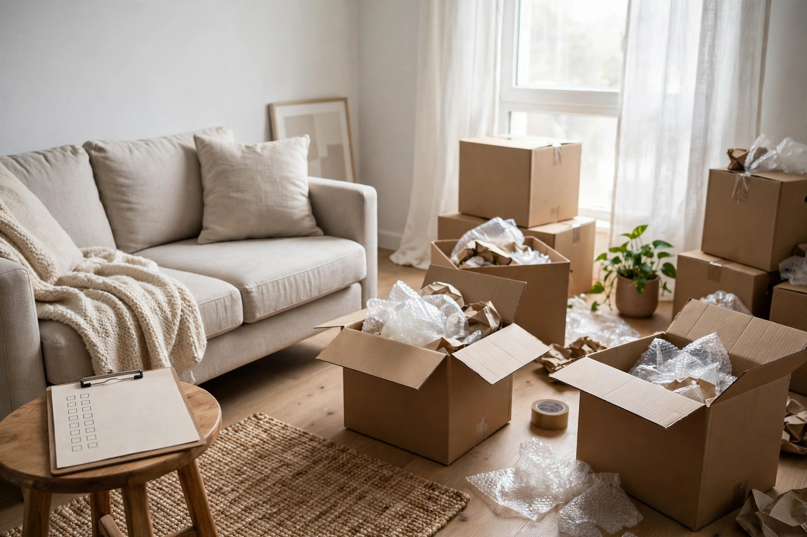

Small Space Storage & Organisation
Small Apartment Move-In Organisation Checklist: First 7 Days
Intro
The first week in a small flat decides how organised it will feel for the next year. Unpack in the wrong order and boxes sit in the hallway for a month; unpack in the right order and by day seven every room has a place for everything. The secret is not unpacking fast — it is unpacking in layers, one room and one system at a time.
This guide is a 7-day move-in organisation checklist for a small apartment — the unpack order, the storage to set up first and the small fixes to make in week one. Most of it costs under $40 in total, and the first day costs nothing but a plan. Follow the days in order, and do not skip day one: it is the day that makes the other six work.

Day 1. Set up the bed, the bathroom and a kettle — $0
Day one is survival, not decoration. Make the bed first, hang the shower curtain, put out towels and soap, and find the kettle, two mugs and the phone chargers. Everything else can wait in boxes. Put one box labelled "Day 1" by the door with bedding, toiletries, chargers and a change of clothes, and open it first. A made bed and a working bathroom make the flat feel like home on the first night, even with boxes everywhere else.
Day 2. Unpack the kitchen in cooking order — $10–$15
Unpack the kitchen in the order you cook: plates and cutlery first, then pans, then the food. Put everyday plates at eye level and the rarely used gadgets on the highest shelf. A small dish rack and a cutlery tray cost about $12 and stop the first pile of washing-up from taking over the counter. Throw away the box the kettle came in — in a small flat, empty boxes are the first clutter. Label one cupboard "everyday" and keep only the things you use weekly in it.
Day 3. Give every room one storage home — $15–$25
Day three is the storage day. Put one basket or box in each room for that room's clutter: a basket by the door for shoes, a box in the bedroom for chargers and cables, a caddy under the kitchen sink for cleaning supplies. Three baskets cost about $20. Do not buy a storage system for the whole flat yet — you do not know what you own until it is unpacked. One box per room is enough to stop things landing on the floor while you finish unpacking.
Day 4. Hang, hook and use the walls — $10–$20
Small flats run out of floor before they run out of wall, so day four goes vertical. Put up adhesive hooks by the door for keys and bags, a hook in the bathroom for towels, and a rail in the kitchen for utensils. A pack of adhesive hooks and a small rail costs about $15, and nothing needs drilling, which matters in a rental. Hang the things you reach for daily at eye level, and the things you use weekly higher up. Every hook you add is a surface that stays clear.
Day 5. Set up the entryway system — $10–$15
The entryway is where a small flat succeeds or fails, so give it a system on day five: a tray for shoes, a hook per person for coats, and a small bowl or tray for keys and post. The tray and hooks cost about $12. Agree one rule with everyone in the flat — shoes in the tray, keys in the bowl, coats on the hook — and the entrance will never become a pile again. If there is no hallway, use the first metre of wall inside the door as the entryway; it does not need a separate room.
Day 6. Do the first declutter — take one bag out — $0
By day six you know what you actually own, so declutter now, while the boxes are still open. Fill one bag with things that do not fit the flat, do not fit your life, or are broken — and take it out of the flat the same day. One bag out costs nothing and frees a shelf, a drawer or a corner. Keep a "maybe" box for the things you cannot decide on, and write a date on it: if you have not opened it in a month, the contents go too. A small flat cannot afford storage for maybes.
Day 7. Write the weekly reset and the shopping list — $0
Day seven is the system that keeps the flat organised after the move. Write a 20-minute weekly reset: one room per day is too much, so pick one evening a week to return everything to its home, wipe the surfaces and take out the recycling. Write a short shopping list of the storage you still need — one shelf, two boxes, a laundry basket — and buy only that list, not a whole storage haul. A flat organised in seven days stays organised because the system is small enough to keep.
Conclusion
Moving into a small flat is not a race to empty every box — it is a week of setting up in the right order: bed and bathroom first, kitchen second, one storage home per room, then the walls, the entryway and a first declutter. By day seven the flat is not finished, but it is liveable, and every box left has a named place to go. Follow the days, keep the weekly reset, and the flat will still feel organised in a year.
Budget recap
- Kitchen tray and dish rack: ~$12 - One basket per room: ~$20 - Hooks and a rail: ~$15
Total for the first week: ~$40 — or $0 if you use boxes and bags you already own.
Pinterest pin titles
- Small Apartment Move-In Organisation Checklist — First 7 Days
- Just Moved? The 7-Day Checklist for a Tiny Flat
- Move Into a Small Apartment Without the Mess: 7 Days, Step by Step